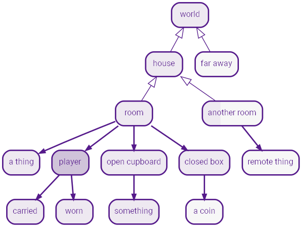
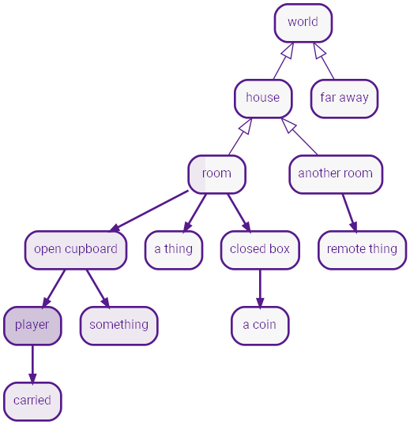

Strand IF Authoring
Strand Games Technology
 Remasters & Sequels
Remasters & Sequels
Introduction
Strand Games is working on a novel technology for IF production called Strand.
Easily make parser IF, choice IF and anything in between with no programming. Deploy to mobile, desktop or the web with a GUI supporting pictures, animation and sound.
Historically, IF systems were designed around computer limitations at the expense of creativity. Strand turns this around putting authoring ahead of technobabble.
Strand does not claim to be more capable than other systems, nor does it claim to do more or have more features. Instead, Strand strives to be quick and easy to use while following one simple idea:
Don't let the 10% complicated features poison the simplicity of the 90%.
The documentation will show you how one simple construct is used in different ways to build diverse and functional games, expressing content generation, choices, world building and text input.
Anyone can use Strand. Write your game in your favourite editor, then run it immediately!
Strand is all open source!
Fundamental Ideas
Terms

Flow is a fundamental concept. Flow is the way in which the event sequence of a story unfolds.
Here is a story;
xxxxxxxxxxSTORYOnce there were three bears, then they all died!The End.
OK, not a very exciting story (or even very original), but it illustrates the building block called the term.;
Anything in capital letters is a term and the rest is flow.
STORY is a term and the text, "Once there were three bears, then they all died! The End." is its flow. Let's run this story and see the output;
Once there were three bears, then they all died! The End.
You may have noticed the line break in the STORY, before "The End", does not appear in the output. Line breaks in text flows are ignored.
You can however have blank lines in text flow, for example;
xSTORYOnce there were three bears, then they _all_ **died!****The End.**
Produces the output;
Once there were three bears, then they all died!
The End.
Notice you can use markdown in text to indicate bold and italic.
Let's put in some more terms;
xxxxxxxxxxSTORYONCE there were THREE bears, then they all died!The End.ONCEOnceTHREEthree
This produces the exact same output as before, except now the terms ONCE and THREE emit their own flow.
NOTE: Sometimes you want a capitalised word in the text. In this case, just prefix the word with \ (backslash) to escape it. Examples: \OK, \TV. For frequent cases, you can make a term which returns the text, eg:
xxxxxxxxxxOK\OK
Selectors
Now, we can give these terms branching flow using selectors. For example;
xxxxxxxxxxSTORYONCE there were THREE bears, then they all died!The End.ONCE* Once* Once upon a time* A long time agoTHREE* two* three* four* five
The term ONCE has three selectors which give alternative flows. ONCE will choose one of the three selectors randomly. The same for THREE.
Now we get random stories, each time we run!
Once upon a time there were five bears, then they all died! The End.
A long time ago there were four bears, then they all died! The End.
So, just with these bear-bones (sic) basics, we can already make stuff;
xxxxxxxxxxSTORYONCE there were THREE bears, PART1. DIED. THEENDONCE* Once* Once upon a time* A long time agoTHREE* two* three* four* fivePART1* they were forced into lockdown in their HOUSE* they all lived in a HOUSEHOUSE* small cottage* tiny house* woodland shack* garden shedDIEDUnfortunately they* contracted VIRUS* were poisoned by POISONand diedPOISON* tainted porridge* a little blond girl* dodgy mushroomsVIRUS* Covid19* a nasty flu* tuberculosis* the plagueTHEEND* The End.* It's all over.* That's the end!
Some sample outputs;
A long time ago there were five bears, they were forced into lockdown in their garden shed. Unfortunately they were poisoned by a little blond girl and died. It's all over.
Once upon a time there were two bears, they all lived in a woodland shack. Unfortunately they were poisoned by tainted porridge and died. It's all over.
Once upon a time there were four bears, they were forced into lockdown in their woodland shack. Unfortunately they contracted tuberculosis and died. That's the end!
You can have text before selectors and/or more text after selectors (eg DIED) but you cannot have more than one set of selectors in a term. You'll see why in the next section.
Sticky Selectors
A problem with random selectors is that sometimes you need to pick something at random and then stick with it. For example, a person's name.
Here's an example where we want to be random, but maintain consistency;
xxxxxxxxxxSTORYMARY had a little LAMB its FLEECE was WHITEASSNOW.And everywhere that MARY went, the LAMB was sure to go.MARY!* Mary* Larry* Barry* Harry* Gary* SallyLAMB!* lamb* chicken* puppy* dog* catFLEECE* fleece* coat* fur* tailWHITEASSNOW* white as snow* red as blood* green as grass* pink as a fairy* blue as sky
In this example, the terms MARY and LAMB have the indicator ! after their definition, but not their usage in the STORY.
The ! indicates the term is sticky.
A sticky term is one whose flow occurs just once and thereafter the flow output remains the same.
Here's some outputs;
Larry had a little puppy its fur was green as grass. And every where that Larry went the puppy was sure to go.
Harry had a little chicken its tail was red as blood. And every where that Harry went the chicken was sure to go.
Unfortunately, it doesn't always rhyme anymore!
There are other indicators you can apply to a term such as ones to control the ordering, the randomness and so on.
Term Indicators
These affect the manner in which selectors are used.
Here are the possible term indictors, many of these are explained later.
| Indicator | Name | Description |
|---|---|---|
! | sticky | Runs flows once thereafter emits the same output. |
& | shuffle | Selectors are "shuffled" and executed in a random order. |
# | nonrandom | Selectors chosen with biased random preventing starvation. |
< | sequence | Selectors run in order. |
= | first | First valid selector is run. |
? | choice | Term is a choice. |
@ | object | Term is an object. |
Choices
So far we've only covered terms used as generators. But;
The difference between a player choice and a generator is whether the choice is made by the player or by the machine.
When you want to make a player choice, you use the exact same syntax but mark the term as a choice using ?.
Here's a new story to illustrate;
xxxxxxxxxxSTORYOnce upon a time there were three bears.What's your name? NAMEOk NAME, here's the deal, the three bears have just gone out for a walk.ROBTHEM That's the end of the game.NAME?!* Goldilocks* Mousilocks* DreadlocksROBTHEM?Do you want to rob their place?* yesBREAKIN* noWell then!BREAKINYou horrible person! Well ok then since that's the plot.You break into their house like a pro.Whoa! Lookee here; on the table are three bowls of porridge. LIKEPORRIDGEVANDALYou* set the place on fire and leave.* smash the place up. That will show 'em.* throw the porridge all over the walls, about all it's good for really.LIKEPORRIDGE?Do you like porridge?* Hell yes!Right on! WHICHBOWL* A bitWHICHBOWL* No, it's awful!Oh well, not much else here then. VANDAL Bears suck anyway!WHICHBOWLThere are three bowls; a large one, a medium one and a small one. BOWLBOWL?Which do you want to try NAME?* the biggest of course!Eww! It's cold and lumpy! BOWL* the medium sized oneEww! It's way too sweet! BOWL* the smallest oneThis one's not too bad. A bit small though, so you eat the lot!Suddenly the door slams open and three angry bears are glaring right at you! WHATNOWWHATNOW?What now?* Run like hell!Nice try, but they swiftly block your exit. MAULED* Climb a tree.Be serious, there are no trees in here! WHATNOW* Put your hands up and plead innocent.Sorry, the cute routine doesn't work with bears! MAULED* Say; NAME went that-a-way, and point out the window!It worked! The bears all rush out to find the culprit.Quickly, you exit the shack and run away as fast as you can. That was close! MORAL* Fight!You rush them, kicking and screaming like a banshee, perhaps they'll run off? MAULEDYOUDIEThey* leave you to die slowly and painfully,* watch you die slowly, your blood squirting out in slow motion,* laugh as you die screaming in agony,while they eat their porridge!VICIOUSLY* viciously* ferociously* mercilessly* easilyMAULEDThe bears grab you and VICIOUSLY tear all your arms and legs off! Bears are _that_ strong you know. YOUDIE MORALMORALPerhaps you won't mess with bears next time!
Let's see how this plays and explain the details;
Once upon a time there were three bears.
What's your name? (1) Goldilocks (2) Mousilocks (3) Dreadlocks 2
Ok Mousilocks, here's the deal, the three bears have just gone out for a walk. Do you want to rob their place? (1) yes (2) no 2
Well then! That's the end of the game.
The flow taken by this short playthrough is illustrated here;

Here's another, slightly longer play;
Once upon a time there were three bears.
What's your name? (1) Goldilocks (2) Mousilocks (3) Dreadlocks 1
Ok Goldilocks, here's the deal, the three bears have just gone out for a walk. Do you want to rob their place? (1) yes (2) no 1
You horrible person! Well ok then since that's the plot. You break into their house like a pro.
Whoa! Lookee here; on the table are three bowls of porridge. Do you like porridge? (1) Hell yes! (2) A bit (3) No, it's awful! 3
Oh well, not much else here then. You throw the porridge all over the walls, about all it's good for really. Bears suck anyway! That's the end of the game.
Here's the flow this time;

You can see from these flow diagrams that flow enters terms and continues to flow into subterms until there is nowhere for it to go, at which point, it returns to the original flow and continues. When the flow finally stops, the game is over.
Finally, here is a longer play;
Once upon a time there were three bears.
What's your name? (1) Goldilocks (2) Mousilocks (3) Dreadlocks 1
Ok Goldilocks, here's the deal, the three bears have just gone out for a walk. Do you want to rob their place? (1) yes (2) no 1
You horrible person! Well ok then since that's the plot. You break into their house like a pro.
Whoa! Lookee here; on the table are three bowls of porridge. Do you like porridge? (1) Hell yes! (2) A bit (3) No, it's awful! 1
Right on! There are three bowls; a large one, a medium one and a small one. Which do you want to try Goldilocks? (1) the biggest of course! (2) the medium sized one (3) the smallest one 1
Eww! It's cold and lumpy! Which do you want to try Goldilocks? (1) the medium sized one (2) the smallest one 2
This one's not too bad. A bit small though, so you eat the lot! Suddenly the door slams open and three angry bears are glaring right at you! What now? (1) Run like hell! (2) Climb a tree. (3) Put your hands up and plead innocent. (4) Say; Goldilocks went that-a-way, and point out the window! (5) Fight! 2
Be serious, there are no trees in here! What now? (1) Run like hell! (2) Put your hands up and plead innocent. (3) Say; Goldilocks went that-a-way, and point out the window! (4) Fight! 1
Nice try, but they swiftly block your exit. The bears grab you and viciously tear all your arms and legs off! Bears are that strong you know. They leave you to die slowly and painfully, while they eat their porridge! Perhaps you won't mess with bears next time! That's the end of the game.
It should now be clear how the flow works in this playthrough, but let's look at choice terms in a detail;
xxxxxxxxxxLIKEPORRIDGE?Do you like porridge?* Hell yes!Right on! WHICHBOWL* A bitWHICHBOWL* No, it's awful!Oh well, not much else here then. VANDAL Bears suck anyway!
LIKEPORRIDGE is a choice term as indicated by ?. It has an (optional) initial text flow Do you like porridge?, then it has three selectors each introduced by * at the start of a line.
You'll notice each selector has two parts:
- The choice flow on the same line as
*. - The action flow on the subsequent lines.
eg
xxxxxxxxxx* Hell yes! // choice flowRight on! WHICHBOWL // action flow
If the choice is selected, the action flow is taken. Terms can also occur in the choice flow as NAME in the following;
xxxxxxxxxxBOWL?Which do you want to try NAME?* the biggest of course!Eww! It's cold and lumpy! BOWL* the medium sized oneEww! It's way too sweet! BOWL* the smallest oneThis one's not too bad. A bit small though, so you eat the lot!Suddenly the door slams open and three angry bears are glaring right at you! WHATNOW
You'll also notice some of the actions in the BOWL term reference BOWL itself. This causes a loop back to the BOWL term.
By default, choice terms remember which choices have previously been used and these do not appear again. For example the option Climb a tree did not appear again when the options were presented again. The same happened as the different porridge bowls were chosen.
It turns out that selectors can also have indicators, and this can be used to tweak behaviour. eg. Indicating *+ Climb a tree. allows the option to be used more than once.
Conditionals
We can give selectors conditionals to allow them to be affected by previous choice decisions.
Selectors can be conditional in both generator and choice terms.
The good news for non-programmers is that there are no, programming style, variables in this language. Instead conditionals are built from whether terms have been visited or not.
Programmers' note: Don't panic; you can have code flows!
As usual, here's a mini game, and then some explaination.
xxxxxxxxxxSTORYOnce upon a time there was a boy called Jack. He lived with his widowed mother. They were very poor. All they had was a cow.You are Jack. One day your old mother says you must take the cow and sell it at the market, as there is no money left for food.Along the way you meet OLDMAN, he offers you some "magic beans" in exchange for the cow. DOSELL \nThe End.OLDMAN* a demented* a funny looking* a peculiar* an incontinentold man with a white beardBODYPART&* shins* head* groin* chestDOSELL?Do you?* Trade the cow for the beans.You give the cow to the old man and pocket the beans, almost immediately regretting the decision. What will you poor old mother say? You return home. GOTBEANSShe throws the beans out the window, "No dinner for you!". You go to bed.\nYou wake up next morning to discover a giant "beanstalk" in the garden, rising far up into the clouds. CLIMB* Reject the stupid old man's offerYou tell him to get stuffed!CASHCOW POOR* Kick him in the BODYPART and take his beans!ATTACKMANATTACKMAN* Oof! The old man doubles up in pain and collapses! You take his silly beans and kick him in the BODYPART for good measure. CASHCOW GOTBEANS "Oh well!" and chucks the beans in the curry. POOR* The old man deftly doges your attack and retaliates. Turns out he's a Kung Foo master (couldn't you tell!). He kicks you right in the BODYPART, flooring you instantly! LOSEPOORYou got dinner, POORLOSEPOORLOSEbut you're still poor and soon run out of food and starve. LOSEGOTBEANSYour mother looks at the beans in disgust, "What's this trash!", she says!CASHCOWAt the market, you sell the cow for a good price and return home.Your mother cooks a giant curry with the money from the cow.CLIMB?DOCLIMB do you?*?!CHICKEN Climb the beanstalkATTOP*+?CHICKEN Climb back up the beanstalkATTOP* Go to the pub.PUB* Hang around the town like a lemon.You do that, POORLOSEDOCLIMB<* With nothing better to do,* This time,PUBYou go to the pub, and do some cleaning in exchange for a beer, POORLOSESMOKE* crack* weed* hashish* // blankGIANTDOING* smoking SMOKE.* reading the newspaper.* watching \TV.* playing a computer game.* grinding some bones.* eating toast.ATTOP?At the top you see a huge castle fit for a giant. Do you?* Enter the castleInside the castle is an enormous hall.At the far end sits a huge fat giant, GIANTDOING Luckily he hasn't seen you. In the middle of the room is a table atop of which is; a hen, a magic harp and a bag of old coins. WHATDO* Climb back down to get some weapons.CHICKENCHICKENChicken! Back at the bottom, you remember you're a pauper and haven't got any weapons. Perhaps if you did you could rob the rich. Or Something. Your mother says, "Get back up that beanstalk and bag us a golden goose, idiot!" CLIMBWHATDO?What now?* Introduce yourself to the giant.You go up to him, holding out your hand and say, "Hi! I'm Jack, nice to meet you!". INTRO* Steal the coinsGETCOINS THIEF* Steal the henGETHEN THIEF* Steal the harpGETHARP THIEFINTRO* The giant shakes your hand saying, "Hi I'm a giant, would you like some tea?"You accept and have a nice little chat about all the problems giants have who live atop of beanstalks and what bad press they get. Presently you bid farewell and climb down. Its always good to make new friends, POORLOSE* The giant grabs your hand, holds you down, then bites your head clean off! He kicks your head around the room for amusement then gets to work grinding your bones. LOSETHIEFYou thief! SOUND He bellows;Fee-fi-fo-fum!\nI smell the blood of an Englishman,\nBe he alive, or be he dead,\nI'll grind his bones to make my bread!\n\nRUNAWAYSOUND*?GETCOINS The giant hears the sound of the coins jangling.*?GETHEN The Hen squawks as you grab it alerting the giant.*?GETHARP The strings of the harp strum a note which alerts the giant.RUNAWAY?You run like hell! But the giant's huge stride is catching you fast. You;* Hide under a table.Nice try, the giant lifts the table then pounds it back down squashing you to death! LOSE* Turn and fight the giant.This is not David and Goliath you know! With a single punch, the giant knocks you out. You're put into the curry pot and eaten for dinner. That's after he grinds your bones of course! LOSE* Jump out the window.A bit risky, but hey!Dangling on a branch, you only just make it.You climb down the beanstalk as fast as you can.At the bottom, you quickly fetch the axe and chop it down.You hear a crash in the distance. Looks like you had a lucky escape there!You show BOOTY to your old mother who says, REVIEWBOOTY*?GETCOINS the bag of coins*?GETHEN the hen*?GETHARP the harpREVIEW*?GETCOINS "Wow gold coins! Well done Jack." Later you buy a bigger house and employ servants to do all the grotty jobs you used to do. WIN*?GETHEN "Only a scrawny hen!" Well i guess we might get some eggs off it. You've no idea if it lays golden eggs as, apparently, it would need to be fed golden nuggets, none of which you have. Instead you feed it grain, but hey it could be worse!*?GETHARP "We need money, not music!" She tosses it out the window, POORLOSEWINYou live happily ever after!LOSEYou have lost!GETCOINSYou grab the bag of coins.GETHENYou grab the hen.GETHARPYou take the harp.
This mini game of "Jack and The Beanstalk", consists mostly of simple choice terms as we've seen before. A few \n are thrown in, to force a newline in the output to make it a bit neater.
You can climb the beanstalk more than once so let's look at the CLIMB term;
xxxxxxxxxxCLIMB?DOCLIMB do you?*?!CHICKEN Climb the beanstalkATTOP*+?CHICKEN Climb back up the beanstalkATTOP* Go to the pub.PUB* Hang around the town like a lemon.You do that, POORLOSEDOCLIMB<* With nothing better to do,* This time,
The initial flow of CLIMB could just be "do you?", but instead we want to say;
- "With nothing better to do, do you?" initially.
- "This time, do you?" thereafter.
This is done using the DOCLIMB term with a sequential < indicator, which will select the options in order and stay on the last thereafter.
At the top of the beanstalk (ATTOP), you get the option to climb down, which results in being called a "chicken";
xxxxxxxxxxCHICKENChicken! Back at the bottom, you remember you're a pauper and haven't got any weapons. Perhaps if you did you could rob the rich. Or Something. Your mother says, "Get back up that beanstalk and bag us a golden goose, idiot!" CLIMB
CHICKEN flows back to to CLIMB. And now we see how CLIMB has conditionals dependent on whether CHICKEN has been visited;
xxxxxxxxxxCLIMB?...*?!CHICKEN choice text flowaction flow*+?CHICKEN choice text flowaction flow
Selectors can have conditionals which test whether a term has been visited, indicated by ?TERMNAME for true and ?!TERMNAME for false.
The + sign in the second selector simply allows that to be shown more than once, the first doesn't need to as it can only happen once.
Here are some example conditional selectors;
*?TERMChoice shown ifTERMis visited.*?!TERMChoice shown ifTERMis not visited.*?(FISH and CHIPS)Choice shown if bothFISHandCHIPSvisited.*?(FISH or CHIPS)Choice shown if any ofFISHandCHIPSvisited.*?!(FISH or CHIPS)Choice shown if neither ofFISHandCHIPSvisited.*?(!FISH and !CHIPS)Choice shown if neither ofFISHandCHIPSvisited.*?((FISH and CHIPS) or (CURRY && SPUDS))You can use "&&" and "||" instead of "and" and "or", if you like.
You can use "not" instead of "!" if you like.
Here's another conditional example from this mini game;
xxxxxxxxxxSOUND*?GETCOINS The giant hears the sound of the coins jangling.*?GETHEN The Hen squawks as you grab it alerting the giant.*?GETHARP The strings of the harp strum a note which alerts the giant.
This term produces different output depending on which item you've chosen to take in the game. Since only one can be true, then only one of the conditions will be true. Remember by default generator terms are random, so if there was more than one, then one of the valid selectors would be chosen at random.
Filters
Finally, let's look at an example using terms as generators, choices, conditionals and filters.
A filter is when flow is input to a term so that the input can be matches against selectors. This is useful when you need something like a table of different actions (a bit like a "case" statement in programming).
Here is a mini murder mystery!
xxxxxxxxxxSTARTGAMEGAME_TITLEMurder at the Manor!GAME_AUTHORby A.HackerGAME_ORGANISATIONStrand GamesGAME_BACKIMAGEimages/title.jpgGAME_COVERTEXT:color:blue,font:Kanit Thin,weight:200/*+------------------------+| || Garden || || || |+-------------+ +-------+| |+------------------+ +-----+ +-------+| | | || Kitchen | | || | | Dining Room |+----------+ +-----+ | |+----+ +-----+ | || | | || | | || | +-----+--+-------+| | | |+-----------------+ | | +-----+--+-------+| | | | | || | | Hall | | || | | | | Drawing Room || +--+ +--+ || Study || +--+ +--+ || | | | | |+-----------------+ +------------+ +----------------+*/GAMEMajor Stephenson has been shot dead in his study! You must solve the murder.You have deduced that exactly one member of the household is the guilty party.The Suspects are; Charles, Major Stephenson's brother and business partner,Charlotte the Major's wife, Jimmy the son or possibly Jeeves the family butler.images/map.pngWho to question? QUESTION \nThe end.// computer randomly picks murderer each gameMURDER!* Jimmy* Charlotte* Charles* JeevesQUESTION*?!(WIN or LOSE) ASKASK?Interrogate,*+ JimmyJIMMY*+ CharlotteCHARLOTTE*+ CharlesCHARLES*+ JeevesJEEVES*+?ASK Accuse someone!ACCUSEQUESTIONOKBUT* I see, but* But* Ok, butPROVE* OKBUT can you prove that?* OKBUT how can you prove that?* OKBUT do you have anything to corroborate that?WHEREU* where were you at the time of the murder?* what were you doing when the murder took place?* do you have an alibi?JIMMY?* Jimmy, WHEREUJWHERE JPROVE*?CPROVE Did you see Charles in the drawing room?JSAY*?BWHERE Jimmy, did you happen to see Jeeves in the dining room?JSAY2JWHERE* I was in the hall.JSAY MURDER* JimmyNo, the room was empty!* CharlesNo, I don't think so.*Yes I did!JSAY2 MURDER* jimmyNo, he was definitely in the kitchen.* JeevesI'm pretty sure he wasn't in the dining room.*Yes, I saw him setting out the table.JPROVE?* PROVEAsk Charles because he saw me there.CHARLOTTE?* Charlotte, WHEREUI was in the garden. SPROVE*?BPROVE Jeeves said he was in the dining room, setting the dinner table. Did you see him?SSAYSPROVE?* PROVEAsk Jeeves, he saw me through the window.SSAY MURDER* CharlotteNo, that's a lie, Jeeves was in the kitchen.* JeevesNo, I think Jeeves was in the kitchen.*Of course!CHARLES?* Charles, WHEREUI was in the drawing room, CDOING CPROVE*?JPROVE Was Jimmy in the hall?CSAYCDOING* smoking my pipe.* reading my book.* playing solitaire.* writing my new novel.* listening to the gramophone.CSAY MURDER* jimmyHe was there earlier, but I'm not sure exactly.* CharlesNo, I didn't see him at all.*Yes indeed, I saw him there.CPROVE?* PROVEJimmy came to see me, ask him.JEEVES?* Jeeves, WHEREUI was in the dining room, preparing the dinner table. BPROVE*?SPROVE Did you see Charlotte doing the gardening?BSAY*?JWHERE Did you see Jimmy in the hall?BSAY2BPROVE?* PROVEBWHEREBWHERECertainly sir, ask Charlotte, she saw me preparing the dinner table.BSAY MURDER* jeevesNo, she's finished that some time before.* CharlotteShe did do some gardening, but I think she'd finished by then.*Yes, I distinctly remember seeing her through the window.BSAY2 MURDER* jimmyNo, I can't recall seeing him.* JeevesHe wasn't in the hall, I remember that.*Yes, I did see him there actually.ACCUSE?Accuse,* JimmyCHKJ* CharlotteCHKS* CharlesCHKC* JeevesCHKBCHKJ MURDER* jimmyWIN*LOSECHKS MURDER* charlotteWIN*LOSECHKC MURDER* charlesWIN*LOSECHKB MURDER* jeevesWIN*LOSEWINWell done! The murderer was indeed MURDER! ISBUTLERLOSESorry, wrong answer, the real murderer was MURDER. ISBUTLERISBUTLER MURDER* jeevesYes I know, the butler did it!
In this game, a random character is picked each time as the murderer and you have to sluth it out!
Most of the contructs we've already covered. The game uses a sticky version of MURDER to initially choose the villian.
The main loop is;
xxxxxxxxxxQUESTION*?!(WIN or LOSE) ASKASK?Interrogate,*+ JimmyJIMMY*+ CharlotteCHARLOTTE*+ CharlesCHARLES*+ JeevesJEEVES*+?ASK Accuse someone!ACCUSEQUESTION
The tail flow on ASK loops back to QUESTION. Note the indent of QUESTION which attaches it to ASK as a tail flow rather than looking like a new term definition.
QUESTION uses the conditional selector, *?!(WIN or LOSE) to determine if the game is over, since if WIN or LOSE have been set, QUESTION will return and flow will end.
All of the ASK selectors use the + indicator as they can be visited more than once, and the final "Accuse someone" choice is conditional on whether ASK has been visited before (which it hasn't the first time).
The gameplay is based on the idea of suspects responses being different depending on whether they are guilty or innocent; the murderer is deceptive and the innocent always tell the truth.
For example, when asking JIMMY? "Did you see Charles in the drawing room?", we arrive at the JSAY term;
JSAY is a filter.
xxxxxxxxxxJSAY MURDER* JimmyNo, the room was empty!* CharlesNo, I don't think so.*Yes I did!
The JSAY term definition has the term MURDER next to it. This is called a topflow and turns the JSAY term into a "case matching" filter.
What happens is the topflow, in this case MURDER, is evaluated and it output is fed into JSAY. for matching.
So, we know MURDER has one of the following values;
xxxxxxxxxxMURDER* Jimmy* Charlotte* Charles* Jeeves
The JSAY filter compares MURDER to its selectors in order, where instead of the choice being random or a player choice, the choice is made by the case match.
Now we see that when Jimmy is asked, "Did you see Charles in the drawing room?", if he is the murderer, he will say "No, the room was empty!" Because he's lying!
And if Charles is the murderer, Jimmy will say, "No, I don't think so." because Charles wasn't in the drawing room (he was out murdering!), but Jimmy can't be completely certain - he's a kid after all.
And if neither Jimmy nor Charles is the murderer, then Jimmy was certain to see Charles in the drawing room all the time, and says, "Yes I did!"
Similar constructs are used for the other game suspects. By interrogating their corroborative statements, you can deduce the villain.
So let's look at how it works when you accuse someone;
xxxxxxxxxxACCUSE?Accuse,* JimmyCHKJ* CharlotteCHKS* CharlesCHKC* JeevesCHKBCHKJ MURDER* jimmyWIN*LOSECHKS MURDER* charlotteWIN*LOSECHKC MURDER* charlesWIN*LOSECHKB MURDER* jeevesWIN*LOSE
Here, the ACCUSE term simply invokes a number of filter terms that separately check whether your accusations matches MURDER, invoking either WIN or LOSE.
For example;
xxxxxxxxxxCHKB MURDER* jeevesWIN* // catch all other casesLOSE
Either jeeves matches MURDER or not. An empty filter match acts as the catch all "else" case and therefore collects all other cases.
And that's all there is to it! Happy sleuthing!
One final note is you can add game meta-data, eg:
xxxxxxxxxxGAME_TITLEMurder at the Manor!GAME_AUTHORby A.HackerGAME_ORGANISATIONStrand GamesGAME_BACKIMAGEimages/title.jpgGAME_COVERTEXT:color:blue,font:Kanit Thin,weight:200
This is used to generate the cover page in the GUI,

The Stands engine can feed the GUI so the choices appear as selections;

Fundamentals of Parser Games

We now move on to building parser games.
We also have everything described so far at our disposal, so we can build mixed parser and choice games, using an ideal mix of both gameplay strategies.
The difference between a "parser game" and those built so far is that, apart from a parser, we need a world model.
The world model is a set of objects, their relationships and their behaviour, ie how they respond to interaction.
World Models from Scratch
The world is built from objects and these are terms just like we've seen before. So far we've seen terms as generators and as choices, and now we can turn a term into an object using the @ indicator.
Let's start our new, parser based, mystery game!
xxxxxxxxxxGAMEHi! Welcome to homicide, try not to kill people!What is your name? HARRYOk HARRY, you have been assigned to solve the mystery death of professor Jones.PART1HARRY?!* Harry* Larry* Barry* Gary* SallyPART1?\nWhat next?* Investigate the crime scene?\OK get's go! CRIMESCENE* Read the report?Professor Jones was the leading expert researching the deadly "Rona" virus.He's been stabbed to death, the evening before he was to present his research findings. Could a rival be involved?* Drink some tea?Sorry, you're out of tea!PART1
Nothing new here, we just set the scene with a couple of choices to get going and some background. When you're ready to play, flow leads to CRIMESCENE, and that's where we go into the world.
To build objects, we (usually) make a hierarchy of types. This way we can attach behaviour at the appropriate level. Object inheritance is described by putting the base types in the topflow, like this:
xxxxxxxxxxCONCEPT@THING@ CONCEPTPLAYER@ THINGROOM@ THINGSTUDY@ ROOM
These definitions aren't useful on their own as we haven't yet filled out their bodies. For that, we have to know what selectors mean for objects. Selectors for choices match player selection, so;
Selectors for objects match action semantics.
Object selector match can be the semantics of an input command, or it can be a system action. In any case, object selectors act as reactions and their action flow is taken whenever the selector matches.
Let's see how this works, it's about time to define the player.
xxxxxxxxxxPLAYER@ THING* namethe player* nameme* x itYou're looking good!* iINV* invINV
An object can be given a name (which is a system action), which allows the object to describe how it would like to be identified by the command parser. You can give objects more than one name, for example the player and me, so that it can be matched by different words, ie synonyms.
When an object is printed out, it will either be textified by its name or you can override this with label, eg;
xxxxxxxxxxPHIPPS@ THING* namemr phipps* labelMr. Phipps
Use label in cases where titles and forced ajectives are needed.
Adjectives can be put in with name
xxxxxxxxxxBODY@ THING> put it in study* namethe dead body* x itXBODY
This is how adjectives are defined, you don't have to list them anywhere. They're figured out from the name selectors. For example, you could write;
xxxxxxxxxxBODY@ THING> put it in study* namethe dead old cold body* namecorpse* namestiff
Whereby the parser would match things like "the dead body", "the body", "body", "the cold dead body", "the dead cold body", "cold corpse", "old stiff" etc.
Bear in mind that on output, in the absence of label, adjectives are only emitted to discrimiate multiple objects of the same base word (when in scope). For example, the red key and the blue key, and further, these adjectives will be added in definition order until the object names are distinct.
Now looking back at player we see some other selectors reacting to verbs;
xxxxxxxxxx* x itYou're looking good!* iINV* invINV
Loosely speaking, i, inv and x are verbs. The system does not have predefined verbs (except "put"), so any word can be used as a verb, it's up to you to use what you like. When you use words in selectors in verb position, they are assumed to be verbs and treated as such by the parser.
it is just shorthand, you can have instead x player if you like.
In the above example, both i and inv do the same thing, flowing to INV, which will generate the inventory. if you want also "take inventory" to work, you wouldn't add it as a reaction to player, instead you'd create an (in scope) "inventory" object.
The last thing to explain is in BODY. What is, > put it in study ?
This is a command flow.
Earlier, we hinted there were various types of flow, so far we've seen two flow elements; text flow and term references. Now it's time to confess and reveal the various elements that can comprise flow:
| Flow Element Type | Syntax | Note |
|---|---|---|
| term reference | TERM | Any word in capitals |
| text | hello world | free-form text |
| command | > put the pot plant in the plant pot | parser expression, > must be at the start of a line. |
| image media | title.jpg | or other image, eg image.png |
| sound media | music.ogg | only ogg supported! |
| code | { /* code here */ } | anything in {} is code, { needs to be at the start of a line. |
If an object definition has command flow before its selectors, this is evaluated at the start, after processing all the objects. So > put it in study will result in the dead body being (initially) located in the study.
Inheritance
Let's go over those base terms again;
xxxxxxxxxxCONCEPT@* nameconcept* x itBORING* examine it> x it* look it> x it* l it> x itBORINGYou don't find anything useful.THING@ CONCEPT* namea thing* get itYou can't get that.* drop itYou don't have that!PLAYER@ THING* namethe player* nameme* x itYou're looking good!* iINV* invINV
So now we're going to see the point of inheritance and base types. Suppose we type examine player, there is no match for this in player (only x player). But because player is a THING, THING is matched for examine, but it's not there either, but because THING is CONCEPT, we find eventually examine it in CONCEPT.
But, examine it in CONCEPT flows to the command > x it which winds up matching x it in PLAYER (as it = player).
So this is how we build verb synonyms. Also we see look player and look at player will work (since there is no express "look at" match, it falls to "look").
But there's more. Why are there methods for get and drop on THING?
That's because "things" are not gettable, so these are catch-alls, the same as x it on CONCEPT flows to BORING, which is a copout generator (there's only one in the example, but you'd have a few for variety).
To make something gettable, make a new term GETTABLE like this:
xxxxxxxxxxGETTABLE@ THING* get itDOGET* drop itDODROPDOGET > put it in player* okYou get IT.*You can't get IT.DODROP > put it in here* okYou drop IT.XHERE*You can't do that.
How does this work? Well, actually there's nothing conceptually new here.
Let's say you're getting something that's GETTABLE, you'll match get it in GETTABLE, which flows to DOGET.
Now, DOGET has a command as a topflow !!
Which means > put it in player is evaluated and the result ("ok" or not), matched by the selectors of DOGET - recall that, terms with topflows are filters! So this structure is used to test whether put worked or not and generate appropriate output.
For comparison, suppose instead we'd had;
xxxxxxxxxxGETTABLE@ THING* get it> put it in playerIT taken.* drop it> put it in hereIT dropped.
This would sure work providing it was possible, so for example, > get note would work, but then you could type > get note again and it would claim note taken. You could also attempt to drop things not being carried!
So inheritance has taken the mechanics of get and drop out of the object itself and tidied this up to a base class.
We do have a "note" in the game, so we can mark it as GETTABLE, then deal specifically with its own methods, such as > read it.
xxxxxxxxxxNOTE@ GETTABLE* namethe note* x itXNOTE* read itXNOTE
You could have special cases for > get note on NOTE, perhaps with a condition, that if true would override the default GETTABLE.
If you're following this so far, you can see that we really are building worlds from scratch. Even the usual stuff like getting and dropping objects is user defined. As are all the nouns, verbs and adjectives (adverbs too!).
In practice, the material here would constitute a library or "core" module to be included in new games. The reusable core would contain CONCEPT, THING, GETTABLE, PLAYER and a bunch of other useful stuff.
We'll finish by defining the inventory and the main loop, then show the complete example.
Earlier we invoked INV, how does this work?
xxxxxxxxxxINV > what is in player* themYou're carrying, LAST.*You're empty handed.
Turns out the parser can handle questions as well as commands, so > what is in player will result in a flow of terms.
* them matches any list, and * it matches just one, so the trick above is simply to format the output nicely. Find the inventory, and print them out and also to deal with the case when the list is empty using the catch-all.
Here's the main loop;
xxxxxxxxxxMAINLOOPWHATSHERE.CMDMAINLOOPSTUFFHERE > what is in here* PLAYER*LASTWHATSHERE\nYou can see, STUFFHERECMD?Now what?*
So WHATSHERE is just a text introduction to STUFFHERE, which runs a query into a filter which removes the player from the list. The result of STUFFHERE is thus a flow of object terms, which finally textify themselves.
The only new trick is in CMD;
This is an ordinary choice term with a single blank choice. A blank choice means we allow parser input. In general we could mix choices with parser like this;
xxxxxxxxxxDOWHAT?* panicCalm down!* give upQUIT*
This would both present choices and allow parser input. We'll be using this later with hybrid parser-choice games.
So here's the complete example. If you play this, you'll notice there's no actual game only a few commands, and those are somewhat rough. To make this polished, the fiddly bits would be hived off to a separate "core" library, clearing the game file for the fun.
xxxxxxxxxxGAMEHi! Welcome to homicide, try not to kill people!What is your name? HARRYOk HARRY, you have been assigned to solve the mystery death of professor Jones.PART1HARRY?!* Harry* Larry* Barry* Gary* SallyPART1?\nWhat next?* Investigate the crime scene?\OK get's go! CRIMESCENE* Read the report?Professor Jones was the leading expert researching the deadly "Rona" virus.He's been stabbed to death, the evening before he was to present his research findings. Could a rival be involved?* Drink some tea?Sorry, you're out of tea!PART1CRIMESCENE> put player in studyYou arrive at the crime scene.XHEREMAINLOOPXHERE> x hereCONCEPT@* nameconcept* x itBORING* examine it> x it* look it> x it* l it> x itBORINGYou don't find anything useful.THING@ CONCEPT* namea thing* get itYou can't get that.* drop itYou don't have that!PLAYER@ THING* namethe player* nameme* x itYou're looking good!* iINV* invINVROOM@ THING* lookXHERE* l> lookSTUDY@ ROOM* namethe study* x itYou're in professor Jones' study. It's a bit of a mess.BODY@ THING> put it in study* namethe dead body* x itXBODYXBODY<* Professor Jones has been stabbled throught the heart with a knife.A note falls out the professor's pocket.> put knife in study> put note in study* It's the dead professor.NOTE@ GETTABLE* namethe note* x itXNOTE* read itXNOTEXNOTEScrawled on the paper in crayon is the words, "You'll never get me copper! I'm too clever for you!"GETTABLE@ THING* get itDOGET* drop itDODROPDOGET > put it in player* okYou get IT.*You can't get IT.DODROP > put it in here* okYou drop IT.XHERE*You can't do that.KNIFE@ GETTABLE* namea knife* x itIt's a nasty piece of work.MAINLOOPWHATSHERE.CMDMAINLOOPSTUFFHERE > what is in here* PLAYER*LASTWHATSHERE\nYou can see, STUFFHERECMD?Now what?*INV > what is in player* themYou're carrying, LAST.*You're empty handed.
Properties
We've seen two kinds of properties so far, inheritance and containership.
- An object term can be a descendent of another.
- An object term can be inside another object.
Inheritance allows behaviour to be attached to the appropriate superclass while containership is the primary method of locating an object in the world.
What else?
All other properties are user defined!
We've already met the builtin verb put, but there is another set, which able to set properties.
So let's say we have a fire blazing away in the drawing room and a fridge in the kitchen. We want to make the fire hot and the frige cold.
xxxxxxxxxxFEELIE@ THING* feel itIt feels> what it feels.FIREPLACE@ FEELIE> put it in drawing room> set it feels hot* namefireplace* namefire* x itLike i said, it's blazing away!FRIDGE@ FEELIE> put it in kitchen> set it feels cold* namea fridge* x itIt's the latest model.
Here we made a superclass FEELIE which will add a reactor for feel.
It's important to note that Strands initially does not know the words, "feels", "hot" or "cold" (or even "fridge" and "fire" for that matter!).
The statement;
> set it feels cold introduces the property "feel" and maps fridge feel -> cold, in this case.
Once a property like feel is defined, you can form queries like;
> what feels hot and > what fridge feels, the first returns fireplace and the second cold.
Scope
A very important concept is that of scope.
What is scope?
Loosely speaking, the scope in relation to the player is the set of objects the player can interact with at any one time.
The scope depends on the relationship of objects and changes with that relationship. In theory, every object has a scope, but we are mainly concerned with the scope with respect to the player.
Strand models the location of objects in terms of containers.
Here's an example player scope derived from containers and inheritance. The scope is indicated by shaded boxes while solid arrows show containership and hollow arrows show inheritance.
For instance, house is a parent of room, in other words a "house room", while player is actually room, but room is not inside house.

Approximately, the player scope is:
- Anything inside the player (recursively), for example carried items, clothing and body parts.
- The object containing the player (the player location).
- All objects (recursively) inside the player location, unless inside closed containers.
- All inheritance parents of 1-3.
From the diagram we can see objects the player can currently access. For example, the player could > examine a thing and it would be in scope. Also the open cupboard and something inside it is also in scope.
The closed box is in scope, but a coin is not.
You can also see that far away places aren't in scope, nor is the remote thing in another room.
But wait, another room is partially shaded, is it in scope?
We now come to the problem of there being slightly different kinds of scope. There's the interactive scope, ie things you can examine, pick up and interact with, and then there's the reference scope, which are things you can mention at but not actually reach.
For example, in a game which says "East of here is the dining room", you'd expect to be able to say > go into the dining room. But the dining room is not in the interactive scope, but you can reference it!
Other times the reference scope differs from the interactive scope is for things like;
- Objects seen at a distance through a window.
- Objects inside transparent closed containers.
- Things in the "room" when the player is inside something like a cupboard.
When the player is inside something that's inside something else, such as getting into the open cupboard, we get the following;

Now, the interactive scope is only the cupboard and what's inside. The room is not in this scope. However, it's possible that the room and possibly things in the room are in reference scope. Whether they are or not depends on the reactors of objects in scope.
Some final notes about scope and containers;
Not shown in the diagram is the fact that objects are not restricted to a single container. In other words an object has a set of containers.
Why would you ever want something in two places at once?
Although not possible in the real world (presumably), this is convenient for game worlds.
Game world objects that benefit from being in multiple locations:
- Doors A door is a threshold between two locations when modelled as "rooms". The player can interact with the same door from both locations and its state is reflected in both. For example, if the door can be either open or closed, then it is seen as so from both adjacent locations. If the door is "broken", then that state is also common.
- Some scenery objects
Let's say you have a river that flows through various locations. The river, the water and all things connected to it are in all those locations. However, in
Strandyou most likely wouldn't do this as multiple locations, but instead create a parent of the locations in question, sayriverplaces, which would host the behviour of the river. - Anything in two places at once that can move. Scenery objects don't move, so it's convenient to put their methods into locations, but for anything that does move, you can't do this, and you would have to use multiple locations.
Timers & Asynchronous Flow
Timers.
Building Worlds with the Core Library
In the previous sections we were building absolutely everything from scratch. This isn't necessary, nor is it really necessary to customise the fundamentals of world building.
The core.str library has been put together to contain a standard template for building parser worlds. It has everything we've seen already (and more) predefined so all you need to do is drop it into your project to get started.
Let's see how you can use this to get started right away, without even having to understand how it works.
We're going to revisit our old friend "Murder at the Manor", except this time, we're going to turn it into a traditional parser game.
File Organisation
xxxxxxxxxxmurdermanor│ story.str│ map.str│ murdermanor.str│ core.str│ ...│└───images│ title.jpg│ map.png│ hall.jpg│ study.jpg│ ...│└───sounds...
We're going to split the Strands into multiple .str files, and put the media into subdirectories. core.str can just be copied in unmodified, and for the others we have:
| File | Description |
|---|---|
| story.str | front end meta-data |
| map.str | location layout |
| murdermanor.str | main game defition |
| core.str | system library |
One way to get started is to copy the murdermanor sample and hack it!
Meta Data
These live in story.str, which will be the initial file to load and will specifiy the other files needed for the runtime.
Here's what it looks like:
xxxxxxxxxxSTARTINITCORESTORYGAME_FILEScore.str map.str murdermanor.strGAME_TITLEMurder at the ManorGAME_AUTHORby A.HackerGAME_ORGANISATIONStrand GamesGAME_BACKIMAGEimages/title.jpgGAME_COVERTEXT:color:blue,font:Kanit Thin,weight:200MAP_BACKIMAGEimages/map.pngGAME_META:ui_ucanvas:false,ui_sidebar:true,autolink:falseGAME_CREDITS<h1>GAME_TITLE<br/><em>by GAME_ORGANISATION</em></h1><h3>Implemented in Strands</h3><p>This game was lovingly hacked together using the Strands engine.</p><h4>Strand Games Team</h4><ul><li>Hugh Steers</li><li>Stefan Meier</li><li>Stefan Bylund</li></ul><h4>Writing</h4><ul><li>An Author</li></ul><h4>Art</h4><ul><li>An Artist</li></ul><h4>Music</h4><ul><li>A Musician</li><li>Additional Music thanks to <a href="http://www.soundimage.org">Eric Matyas</a></li></ul><h4>Testing</h4><ul><li>A Tester</li></ul>
Apart from START and GAME_FILES, none of this is needed in console mode and it's all for the GUI.
| Term | Description |
|---|---|
| GAME_FILES | list of other .str files needed at runtime. |
| GAME_TITLE | for GUI cover page |
| GAME_AUTHOR | for GUI cover pagep |
| GAME_ORGANISATION | for GUI cover page |
| GAME_BACKIMAGE | image for GUI cover page |
| GAME_COVERTEXT | font settings for cover page text |
| MAP_BACKIMAGE | image for map background |
| GAME_META | GUI configuration (see ifi specification) |
| GAME_CREDITS | HTML to appear on the GUI credit screen |
Making the Map
There are no new concepts needed to define the game location layout, but it is practical to put all the "rooms" into a separate map.str file which also specifies their interconnection.
Here's map.str, you'll see how they interconnect:
xxxxxxxxxx/*+------------------------+| || Garden || || || |+-------------+ +-------+| |+------------------+ +-----+ +-------+| | | || Kitchen | | || | | Dining Room |+----------+ +-----+ | |+----+ +-----+ | || | | || | | || | +-----+--+-------+| | | |+-----------------+ | | +-----+--+-------+| | | | | || | | Hall | | || | | | | Drawing Room || +--+ +--+ || Study || +--+ +--+ || | | | | |+-----------------+ +------------+ +----------------+*/MANOR@ INSIDE* namethe manor* namehouse//////////////////// hallHALL@ MANOR* namethe hall* x itYou're in the hall.Westwards is the study, east is the drawing room and further north leads to the kitchen.* wGOSTUDY* go studyGOSTUDY* eGODRAWINGROOM* go drawing roomGODRAWINGROOM* nGOKITCHEN* go kitchenGOKITCHENGOHALL> put player in hallYou go into the hall.images/hall.jpgXHERE///////////////////// studySTUDY@ MANOR* namethe study* x itYou're in the study.Back east is the hall.* eGOHALL* go hallGOHALLGOSTUDY> put player in studyYou go into the study.images/study.jpgXHERE///////////////////// drawing roomDRAWINGROOM@ MANOR* namethe drawing room* x itYou're in the drawing room.West leads back to the hall, while the room leads north into the dining room.* wGOHALL* go hallGOHALL* nGODININGROOM* go dining roomGODININGROOMGODRAWINGROOM> put player in drawing roomYou go into the drawing room.images/drawing.jpgXHERE//////////////////// Dining roomDININGROOM@ MANOR* namethe dining room* x itThis is the dining room, you can go further north out into the garden or back south to the drawing room.* sGODRAWINGROOM* go drawing roomGODRAWINGROOM* nGOGARDEN* go gardenGOGARDENGODININGROOM> put player in dining roomYou go into the dining room.images/dining.jpgXHERE//////////////////// GardenGARDEN@ OUTSIDE* namethe garden* x itYou're outside in the garden.An exit south leads back into the house.* sGODININGROOM* go dining roomGODININGROOMGOGARDEN> put player in gardenYou go into the garden.images/garden.jpgXHERE////////////////// kitchenKITCHEN@ MANOR* namethe kitchen* x itYou're in the kitchen.The south exit takes you back into the hall.* sGOHALL* go hallGOHALLGOKITCHEN> put player in kitchenYou go into the kitchen.images/kitchen.jpgXHERE
Here, we define our six locations. The location descriptions are deliberately terse, to make things easier to see.
Firstly, we've defined a holding location, MANOR which is a base for everthing except the garden. An INSIDE has walls and is defined in core.str. Anything we want to add generally to the manor can go here.
Let's examine the HALL in detail, the rest are all similarly constructed.
We give it a name and a description with x it, then we define reactors to move to the study, the kitchen and the drawing room. So go study flows to GOSTUDY as does w.
We add reactors like n, s, e, w, if we want to support compass directions. You only need thes if you want to support traditional compass navigation. You don't need to worry about the other ways to move, since core.str maps variants like go west and go w to w.
It makes sense to define a term to perform the actual movement, in this case GOSTUDY. This is so it can be used anywhere. If we have a "hall", then you probably want a GOHALL as well.
xxxxxxxxxxGOSTUDY> put player in studyYou go into the study.images/study.jpgXHERE
Is a straightforward term which has a command flow, a text flow, an image flow and finally a term XHERE which refreshes the text and updates the top bar on the GUI. images/study.jpg will display the location picture.
You can use .jpg or .png as well as animated PNGs.
One this is all done, you should be able to move about your game!
Building the main Game
All that's left now is to write the actual game itself :-)
xxxxxxxxxxSTORYMajor Stephenson has been shot dead in his study! You must solve the murder.You have deduced that exactly one member of the household is the guilty party.The Suspects are; Charles, Major Stephenson's brother and business partner,Charlotte the Major's wife, Jimmy the son or possibly Jeeves the family butler.BEGIN// computer randomly picks murderer each gameMURDER!* Jimmy* Charlotte* Charles* JeevesBEGINUPDATEMAPGOHALLMAIN
How To Make Doors
Firstly, what do we want from a door?
If a door is just part of the scenery and has no state, then we can implement it purely as a scenery object. Put its behaviour in the locations that can "see" the door.
However, if a door has state, eg open or closed, and we want to prevent the player from going through the door if closed, then we need a bit more.
The nature of a door is something that is in two locations and acts as a threshold between them.
Let's add a broom cupboard, west of the kitchen behind a door.
First, the new location:
xxxxxxxxxxCUPBOARD@ MANOR DOOR_OUT* namebroom cupboard* x itYou're in the broom cupboard!GOCUPBOARD> put player in broom cupboardYou go into the broom cupboard.XHERE
And for convenience, we've bundled the behaviour to exit the cupboard into a separate parent DOOR_OUT. This isn't necessary, you could just put these reactions on the end of CUPBOARD if you like.
xxxxxxxxxxDOOR_IN@* w> go door* go broom cupboard> go doorDOOR_OUT@* out> go door* go kitchen> go door* e> go door
But you can see we also have a DOOR_IN, these are the opposite reactors to go into the cupboard from the kitchen. DOOR_IN, needs to be added as a parent of KITCHEN;
xxxxxxxxxxKITCHEN@ MANOR DOOR_IN* namethe kitchen...
What we've done in these reactors is sent everything to > go door. So now, we need a clever > go door that knows what to do.
First, define the door itself:
xxxxxxxxxxCUPBOARDDOOR@ DOOR> put it in kitchen> put it also in broom cupboard* namethe door* x itIt's the broom cupboard door, XDOOR.* go itGODOOR
Four things here:
- the
DOORparent object is incore.strand providesopenandclosemethods depending on itsstate. - The two
putmethods put the door in two locations. x ituses a helperXDOORwhich will reveals whether it's open or closed.GODOORis to handle the> go doorlogic.
You might be wondering why we can't say > put it in the kitchen and broom cupboard. Well, although that's a valid statement, put only allows one indirect object, as this is the case for normal game usage.
Note the word also used in the second put. If this is not present the second put would override the first and the door would no longer be in the kitchen, but only the cupboard.
We create a property called state that can have the value, either open or closed. closed is actually a dummy, as the logic will always test for open, and if not, assume closed.
Let's see this with XDOOR:
xxxxxxxxxxXDOOR > what is door state* openwide open*shut
and for GODOOR:
xxxxxxxxxxGODOOR > what is door state* openDOGODOOR*> open doorGODOORDOGODOOR > what is player in* KITCHENGOCUPBOARD* CUPBOARDGOKITCHEN
In this version, we'll have the player automatically open the door, rather than say "but the door is closed" or something like that.
So now, if the player is in the kitchen, > w will flow to > go door, then to GODOOR, which if not open will flow to > open door and then to DODOOR again, which will then flow to DOGODOOR which will figure out the player is in the kitchen and flow to GOCUPBOARD.
Here's a transcript:
You're in the hall. A large grandfather clock stands against one wall. Westwards is the study, east is the drawing room and further north leads to the kitchen. You can see Jeeves the butler. > n You go into the kitchen. You're in the kitchen. There's a fridge up against the back wall. The south exit takes you back into the hall. > look at the door It's the broom cupboard door, shut. > w You open the door. You go into the broom cupboard. You're in the broom cupboard! > x door It's the broom cupboard door, wide open. > go east You go into the kitchen. You're in the kitchen. There's a fridge up against the back wall. The south exit takes you back into the hall.
Finally, out of curiosity let's look at the definition of DOOR from core.str. This is all reusable:
xxxxxxxxxxDOOR@ THING* open itOPENDOOR* close itCLOSEDOOROPENDOOR > what is it state* openIt's already open!*> set it state openYou open IT.CLOSEDOOR > what is it state* open> set it state closedYou close IT.*It's already closed.
Building Parser Choice Games
These are games where the player has both choices and text entry at the same time.
Animation
Simple animation can be made as animated PNGs, but complex ones are built using Spine. The Strand GUI has the spine 2D animation runtime built in and all that's needed is to drop the spine output files into the images folder and use them.